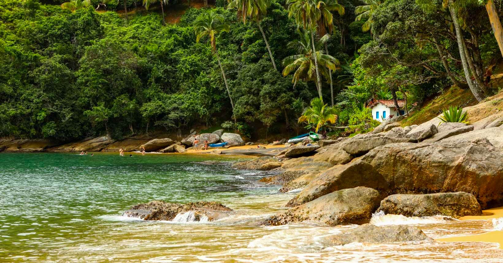
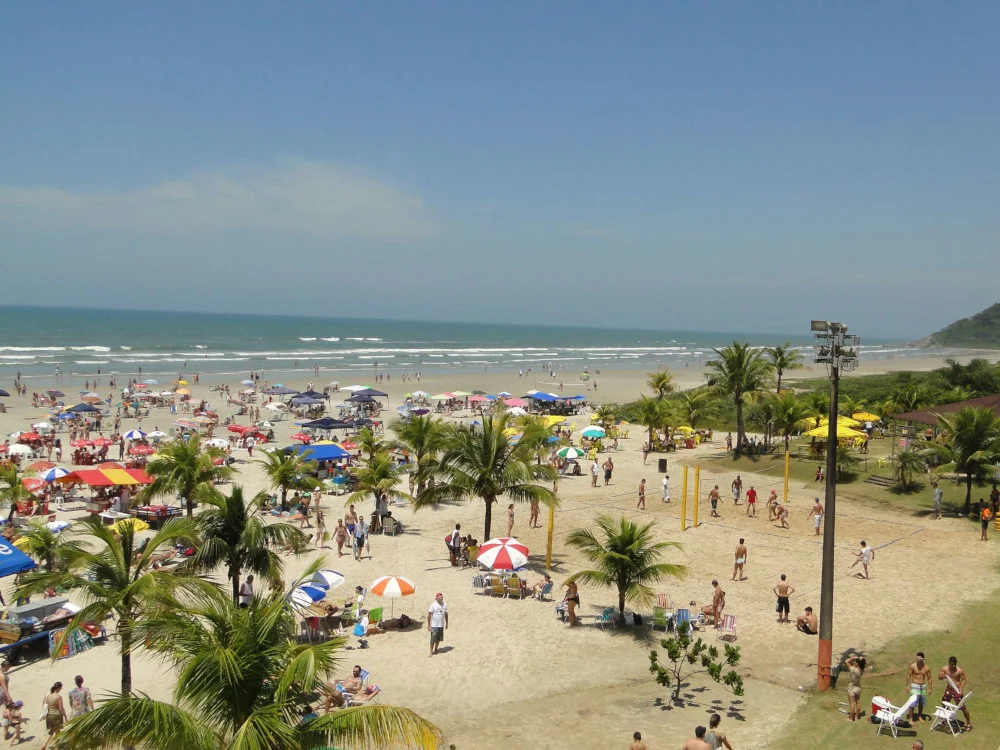
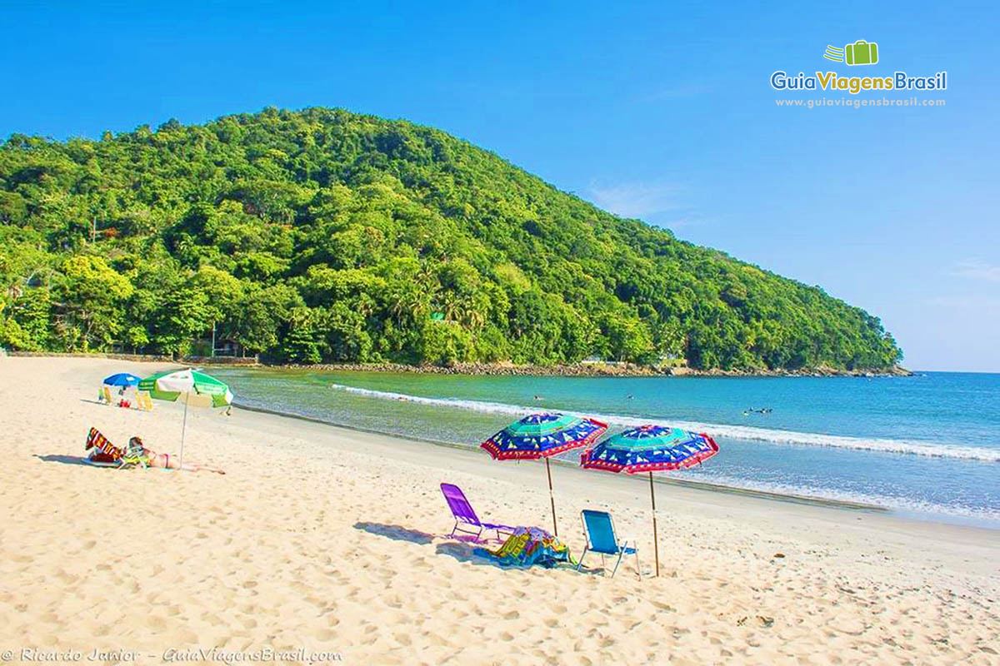
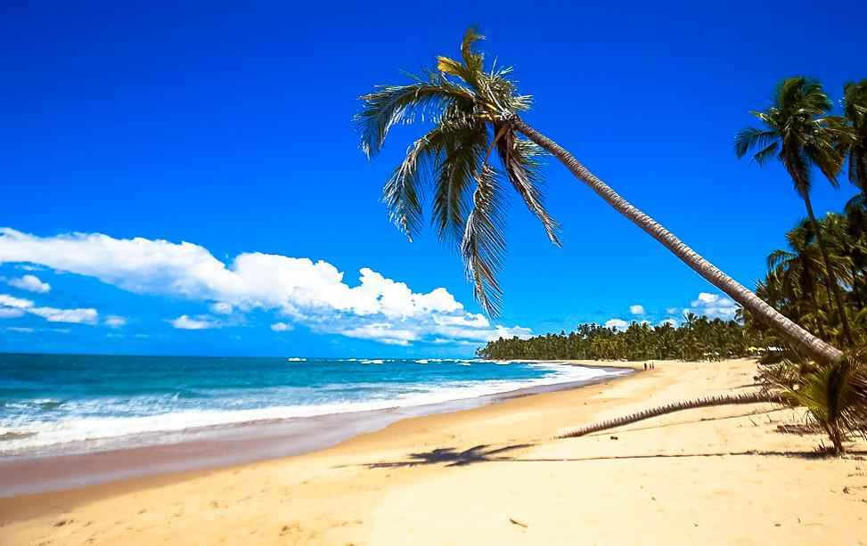

Praias do Brasil
O Brasil é um dos países tropicais conhecidos pelas prais mais bonitas do planeta. confira as melhores praias para esse verão.
jericoacora

Jericoacoara é uma praia localizada na vila homônima, no município de Jijoca de Jericoacoara, no estado do Ceará, no Brasil. Está localizada a 295 km a oeste da capital do estado, Fortaleza. Foi eleita em 1994 pelo jornal estadunidense The Washington Post uma das dez praias mais bonitas do planeta.Em 2014, foi eleita pelo Huffington Post a quarta melhor praia da Terra.É um dos locais mais frequentados por praticantes de windsurfe no país. A praia é parte integrante do Parque Nacional de Jericoacoara.
Atrações
- Pedra furada.
- Duna do pôr do sol.
- Igreja Nossa senhora da Consolação.
- serrote.
- Farol de jericoacoara.
- campo das dunas.
Ilhablea

A Praia de Ilhabela é conhecida por suas belezas naturais e águas cristalinas. Localizada no município de Ilhabela, no litoral de São Paulo, é famosa por sua rica biodiversidade, com uma combinação de montanhas, vegetação exuberante e praias deslumbrantes. Os visitantes podem aproveitar atividades como mergulho, trilhas e passeios de barco. A infraestrutura local oferece opções de hospedagem, restaurantes e lojas, tornando a praia um destino popular tanto para turistas quanto para moradores. A atmosfera tranquila e o cenário paradisíaco atraem aqueles que buscam relaxar e se conectar com a natureza
Atrações
- Passeios de barco.
- Eventos culturais.
- Centro Histórico.
Boraceia

Entre suas atrações, destacam-se as cachoeiras próximas, que podem ser acessadas por trilhas, e a prática de esportes aquáticos, como stand-up paddle e caiaque. Boraceia também conta com quiosques e restaurantes que servem pratos típicos da região. A área é popular entre os campistas, permitindo uma imersão completa na beleza natural do local. É um ótimo destino para quem deseja um refúgio sossegado.
Atrações
Atividades Aquáticas.
Praia do léo.
São sebastião Praia

A Praia de São Sebastião, localizada no litoral norte de São Paulo, é conhecida por suas belezas naturais e rica história. Com águas cristalinas e uma longa faixa de areia, a praia atrai tanto turistas quanto moradores locais. É um local popular para a prática de esportes aquáticos, como surf e stand-up paddle.
O centro histórico de São Sebastião, com suas construções coloniais e o Museu de Arte Sacra, oferece um toque cultural à visita. A região também conta com diversas opções de restaurantes e quiosques que servem delícias da culinária caiçara. Além disso, há acesso a trilhas e cachoeiras nas proximidades, tornando o destino ideal para quem busca relaxamento e aventuras ao ar livre. É um lugar perfeito para aproveitar a natureza e a cultura local
Atrções
Trilhas e Ecoturismo
Festivais e Eventos
Centro Histórico
Praia de ilheus

A Praia de Ilhéus, situada no sul da Bahia, é famosa por suas belas paisagens, águas mornas e rica história. Com uma extensa faixa de areia dourada, é um destino ideal para relaxar e aproveitar o sol. A praia é conhecida por suas barracas de praia que servem pratos típicos, como acarajé e moqueca.
Ilhéus também possui um centro histórico vibrante, com edificações coloniais e o famoso Bataclan, um antigo cabaré que hoje é um ponto turístico. A região é cercada por plantações de cacau, o que contribui para a cultura local.
Além de aproveitar as belezas naturais, os visitantes podem explorar as áreas vizinhas, como a Praia dos Milionários e a Praia de Olivença. É um destino que combina lazer, cultura e uma rica gastronomia, perfeito para quem busca uma experiência autêntica na Bahia.
Atrações
Fazendas de Cacau
Parque Municipal
Centro Histórico